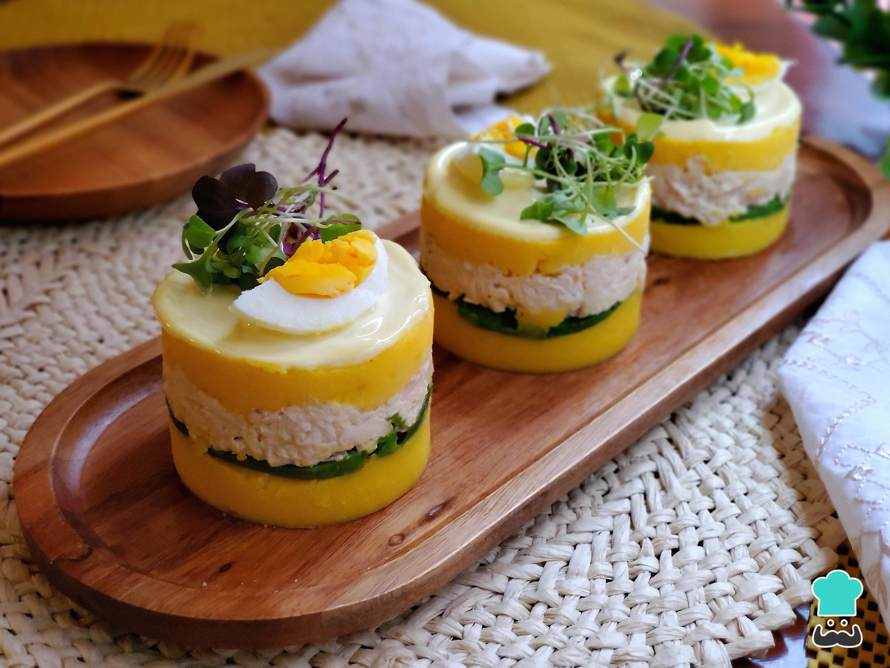

Causa rellena

Description
Causa is a best described as a sort of mini-casserole, with a top and bottom composed of mashed potato mixed with lime juice and aji amarillo (Peruvian yellow pepper), and a filling consisting of, well, virtually anything. Commonly the middle will be tuna, lobster, crab, octopus, shrimp, avocado, or chicken.
Ingredients
- Potatoes
- Aji amarillo
- Lime
- Chicken
- Oil
Steps
- Boil the potatoes, then drain. Pass boiled potatoes through ricer or masher and let cool to room temperature.
- Add potatoes to a large mixing bowl with olive oil, lime juice, aji amarillo paste. Stir to combine, then season with salt and pepper.
- Tightly line a casserole dish with plastic wrap.
- Fill the bottom 1/3 of a casserole dish with half of the mashed potato mixture. Smooth over.
- Place a thin layer of sliced avocado on top of the bottom layer of the mashed potato mixture.
- Add the filling of your choice on top of the avocado, filling the casserole dish to about 2/3 full.
- Fill the casserole to the top with a second layer of the mashed potato mixture. Smooth over.
- Place plastic wrap over the top of the dish and refrigerate for at least 30 minutes.
- Flip casserole dish upside down on to plate to un-mold causa. Remove plastic wrap.
- Serve and enjoy!
More recipes